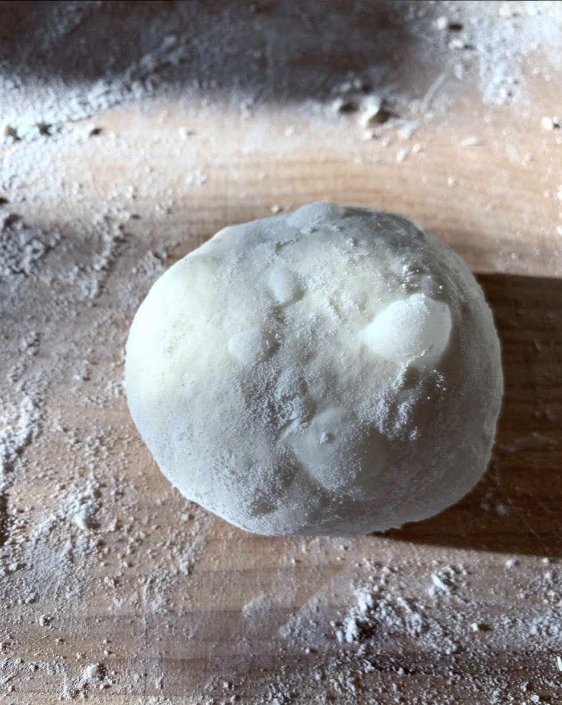
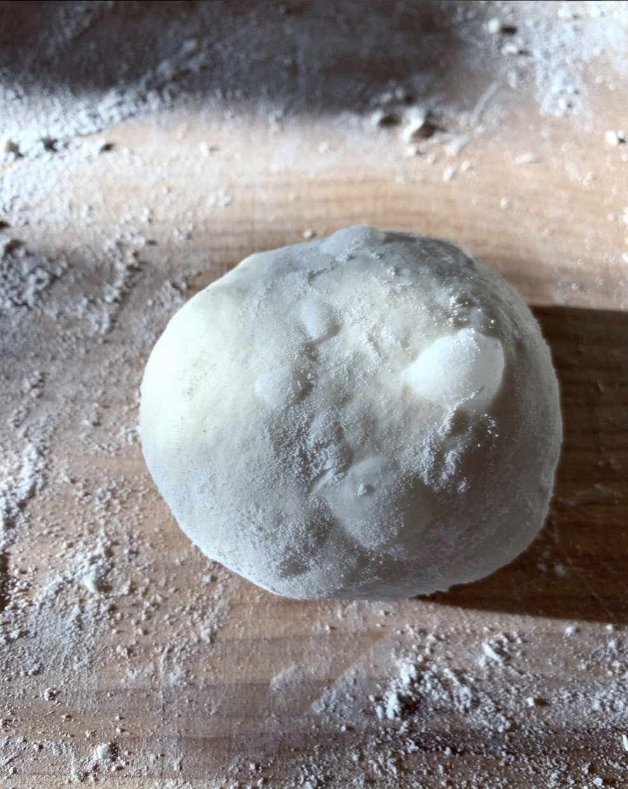

bread
in 2020 and 2021, i worked as a bread baker in detroit, mi. every morning, five days a week, i would wake up at four to crank on our enormous vintage bread oven to 500 degrees, put the coffee on, grab an apron, and begin the day's bake. this site documents my experience in those sleepy mornings, taking flash photos before the sunrise of the strange shapes dough makes.
welcome to shhh... bread.
 
